R code for examples in Chapter 2:
Displaying data
We used R to analyze all examples in Chapter 2. We put the code here so that you can too.
Also see our lab on graphics using R.
New methods on this page
-
Read data from a comma-separated (.csv) file into a data frame.
locustData <- read.csv(chap02f1_2locustSerotonin.csv, stringsAsFactors = FALSE) -
Inspect data in a data frame.
head(locustData) nrow(locustData) -
Strip chart relating a numeric variable to a categorical variable:
ggplot(data = locustData, aes(x = treatmentTime, y = serotoninLevel)) + geom_jitter() -
Frequency table:
table(tigerData$activity) -
Bar graph for count data:
ggplot(data = educationSpending, aes(x = as.character(year), y = spendingPerStudent)) + geom_bar(stat = "identity") -
Histogram for a numeric variable:
ggplot(data = zikaData, aes(x = biparietalDiamMm)) + geom_histogram() -
Scatter plot showing association between two numeric variables:
ggplot(data = guppyFatherSonData, aes(x = fatherOrnamentation, y = sonAttractiveness)) + geom_point() -
Other new methods:
- Load an R package.
- Make a contingency table.
- Create a multiple-histogram plot.
- Make a line plot.
Load required package
We’ll use the ggplot2 add on package to draw some of the plots. It needs to be loaded only once per session.
library(ggplot2)Figure 2.1-2. Locust serotonin
Strip chart of serotonin levels in the central nervous system of desert locusts that were experimentally crowded for 0 (the control group), 1, and 2 hours.
Read data from .csv file
The read.csv() command grabs the data from a file on the book web site and stores in the data frame locustData.
locustData <- read.csv(url("https://whitlockschluter3e.zoology.ubc.ca/Data/chapter02/chap02f1_2locustSerotonin.csv"), stringsAsFactors = FALSE)Show the first few lines of data
To check that the data were read correctly and determine the number of cases (rows) in the data.
head(locustData)## serotoninLevel treatmentTime
## 1 5.3 0
## 2 4.6 0
## 3 4.5 0
## 4 4.3 0
## 5 4.2 0
## 6 3.6 0nrow(locustData)## [1] 30Draw a stripchart
The ggplot() code stitches together multiple components here shown on different lines: the data and variables; the strip chart itself (with options specifying color and size of dots and width of strips); the axis labels, and the theme. We convert treatmentTime to a character variable for best results.
meanLevel <- tapply(locustData$serotoninLevel, locustData$treatmentTime,mean)
ggplot(data = locustData, aes(x = as.character(treatmentTime), y = serotoninLevel)) +
geom_jitter(color = "firebrick", size = 3, width = 0.15) +
labs(x = "Treatment time (hours)", y = "Serotonin (pmoles)") +
theme_classic()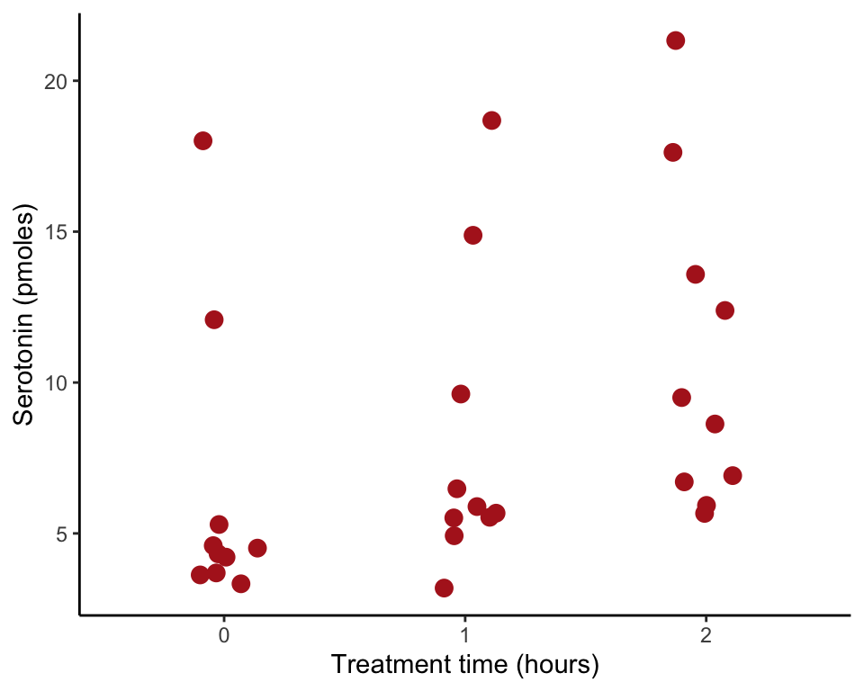
Figure 2.1-3. Education spending
A bar graph of education spending per student in different years in British Columbia.
Read and inspect data
educationSpending <- read.csv(url("https://whitlockschluter3e.zoology.ubc.ca/Data/chapter02/chap02f1_3EducationSpending.csv"), stringsAsFactors = FALSE)
head(educationSpending)## year spendingPerStudent
## 1 1998 5844
## 2 1999 5983
## 3 2000 6216
## 4 2001 6328
## 5 2002 6455
## 6 2003 6529Bar graph
In this example, the actual bar heights are provided in the data frame, so we use stat = "identity". We convert year to a categorial variable for best results.
ggplot(data = educationSpending, aes(x = as.character(year), y = spendingPerStudent)) +
geom_bar(stat = "identity", fill = "firebrick") +
labs(x = "", y = "Education spending ($ per student)") +
theme_classic()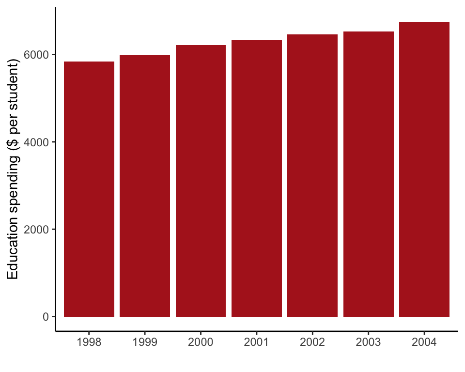
Example 2.2A. Deaths from tigers
Frequency table and bar graph showing activities of 88 people at the time they were killed by tigers near Chitwan National Park, Nepal, from 1979 to 2006.
Read and inspect data
We store the data into a data frame named tigerData.
tigerData <- read.csv(url("https://whitlockschluter3e.zoology.ubc.ca/Data/chapter02/chap02e2aDeathsFromTigers.csv"), stringsAsFactors = FALSE)
head(tigerData)## person activity
## 1 1 Disturbing tiger kill
## 2 2 Forest products
## 3 3 Grass/fodder
## 4 4 Fuelwood/timber
## 5 5 Grass/fodder
## 6 6 Forest productsFrequency table
This is a basic frequency table. R will arrange the categories in alphabetical order by default. Use sort() to order categories from most to least frequent. The last step, data.frame() arranges the frequencies in a column.
tigerTable <- table(tigerData$activity)
tigerTable <- sort(tigerTable, decreasing = TRUE)
data.frame(tigerTable, row.names = 1)## Freq
## Grass/fodder 44
## Forest products 11
## Fishing 8
## Herding 7
## Disturbing tiger kill 5
## Fuelwood/timber 5
## Sleeping in house 3
## Walking 3
## Toilet 2Frequency table
We can instead use factor() to make a new activity variable whose categories (“levels”) are ordered by frequency.
tigerTable <- table(tigerData$activity)
tigerData$activity_ordered <- factor(tigerData$activity,
levels = names(sort(tigerTable, decreasing = TRUE)) )
data.frame(table(tigerData$activity_ordered), row.names = 1)## Freq
## Grass/fodder 44
## Forest products 11
## Fishing 8
## Herding 7
## Disturbing tiger kill 5
## Fuelwood/timber 5
## Sleeping in house 3
## Walking 3
## Toilet 2Bar graph
In this example, ggplot() tallies the frequency in each category from the data using stat = "count". We’ll use the new, ordered activity variable created in the previous step. We also add an option to rotate the axis labels so they fit on the page.
ggplot(data = tigerData, aes(x = activity_ordered)) +
geom_bar(stat = "count", fill = "firebrick") +
labs(x = "Activity", y = "Frequency") +
theme_classic() +
theme(axis.text.x = element_text(angle = 90, hjust = 1))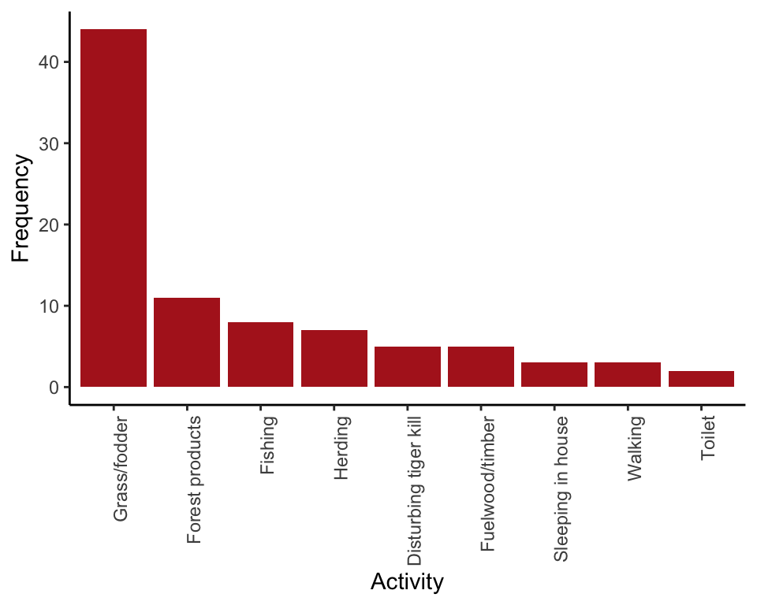
Example 2.2B. Effects of Zika virus
Frequency table and histogram illustrating the frequency distribution of head diameters of fetuses of pregnant women infected with the Zika virus.
Read and inspect data
zikaData <- read.csv(url("https://whitlockschluter3e.zoology.ubc.ca/Data/chapter02/chap02e2bZikaBiparietalDiameter.csv"), stringsAsFactors = FALSE)
head(zikaData)## gestationalAgeWks biparietalDiamMm
## 1 34.1 61
## 2 32.9 69
## 3 35.6 70
## 4 35.8 82
## 5 34.4 80
## 6 33.3 80Frequency table
To make a frequency table for a numeric variable we need to place observations into bins. THe variables head width ranges from 61 to 92.
range(zikaData$biparietalDiamMm)## [1] 61 92So let’s make bins of width 5 from 60 to 95. The option right = FALSE ensures that abundance value 70 (for example) is counted in the 70-75 bin rather than in the 65-70 bin.
zikaTable <- table(cut(zikaData$biparietalDiamMm,
breaks = seq(00, 95, by=5), right = FALSE))
data.frame(zikaTable, row.names = 1)## Freq
## [0,5) 0
## [5,10) 0
## [10,15) 0
## [15,20) 0
## [20,25) 0
## [25,30) 0
## [30,35) 0
## [35,40) 0
## [40,45) 0
## [45,50) 0
## [50,55) 0
## [55,60) 0
## [60,65) 1
## [65,70) 1
## [70,75) 1
## [75,80) 0
## [80,85) 13
## [85,90) 20
## [90,95) 4Histogram
A quick histogram in base R can be obtained as follows
hist(zikaData$biparietalDiamMm, right = FALSE, col = "firebrick")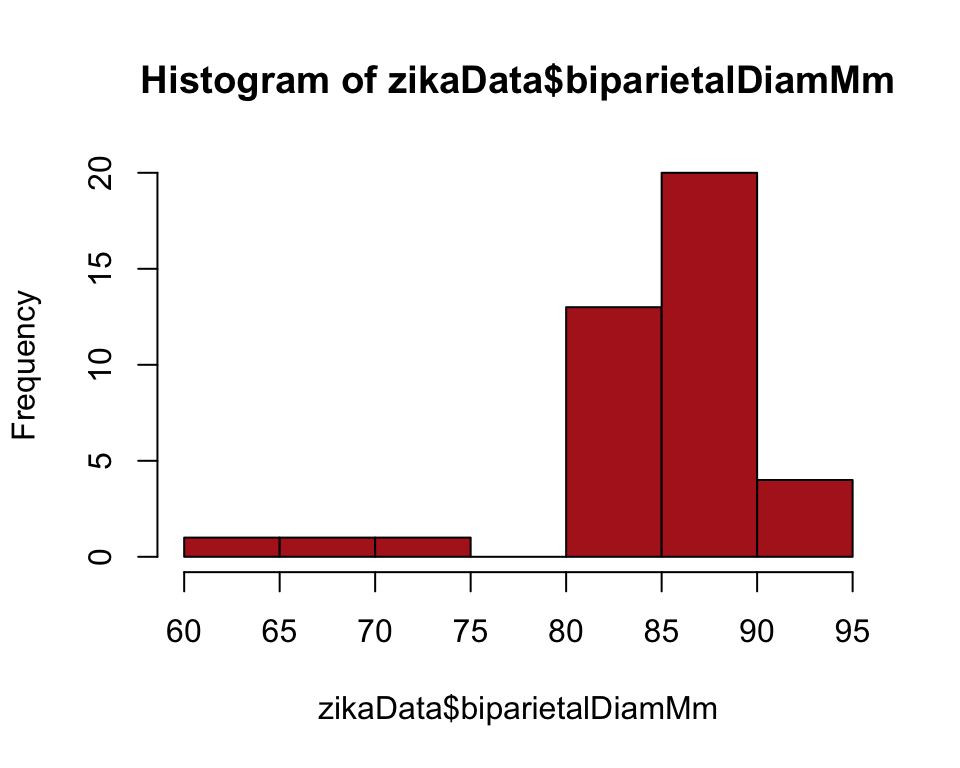
Or use the ggplot() method. The option boundary = 0 puts bars between the bin cut points. The option closed = left ensures that abundance value 70 (for example) is counted in the 70-75 bin rather than in the 65-70 bin.
ggplot(data = zikaData, aes(x = biparietalDiamMm)) +
geom_histogram(fill = "firebrick", col = "black", binwidth = 5,
boundary = 0, closed = "left") +
labs(x = "Head diamater (mm)", y = "Frequency") +
theme_classic()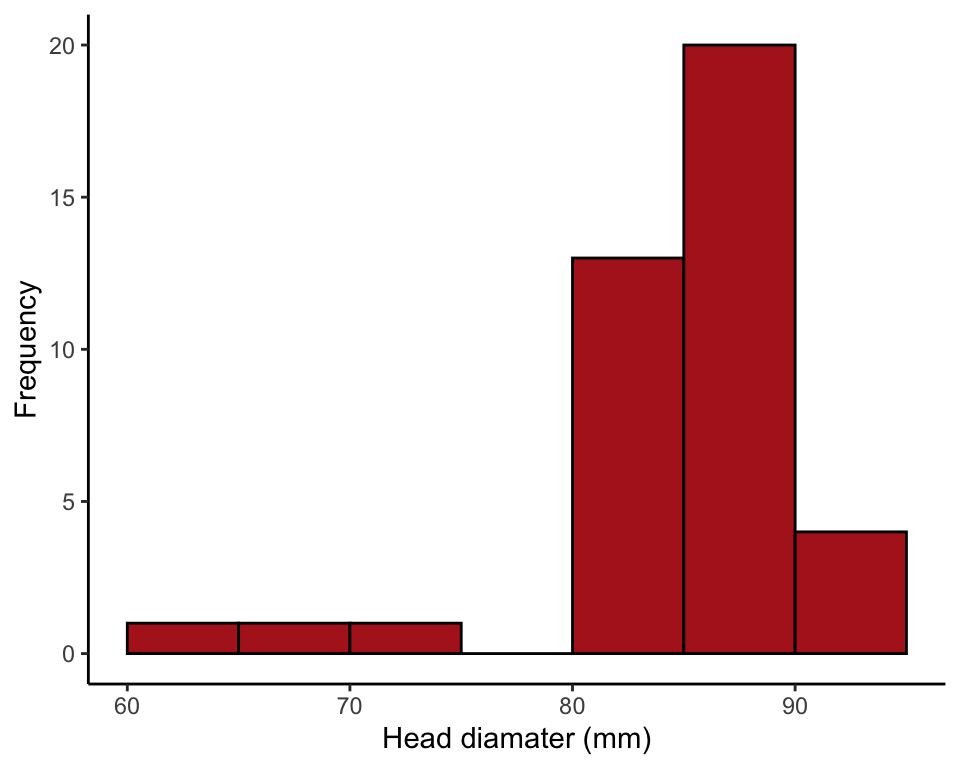
Figure 2.2-5. Salmon body size
Histograms of body mass of 228 female sockeye salmon sampled from Pick Creek in Alaska. The same data are plotted for three different interval widths: 0.1 kg, 0.3 kg, and 0.5 kg.
Read and inspect data
salmonSizeData <- read.csv("https://whitlockschluter3e.zoology.ubc.ca/Data/chapter02/chap02f2_5SalmonBodySize.csv", stringsAsFactors = FALSE)
head(salmonSizeData)## year sex oceanAgeYears lengthMm massKg
## 1 1996 FALSE 3 513 3.090
## 2 1996 FALSE 3 513 2.909
## 3 1996 FALSE 3 525 3.056
## 4 1996 FALSE 3 501 2.690
## 5 1996 FALSE 3 513 2.876
## 6 1996 FALSE 3 501 2.978Histograms, testing different bin widths
Comparing the effect of setting bin width to 0.1, 0.3, and 0.5 kg.
ggplot(data = salmonSizeData, aes(x = massKg)) +
geom_histogram(fill = "firebrick", col = "black", binwidth = 0.1,
boundary = 0, closed = "left") +
labs(x = "Body mass (kg)", y = "Frequency") +
theme_classic()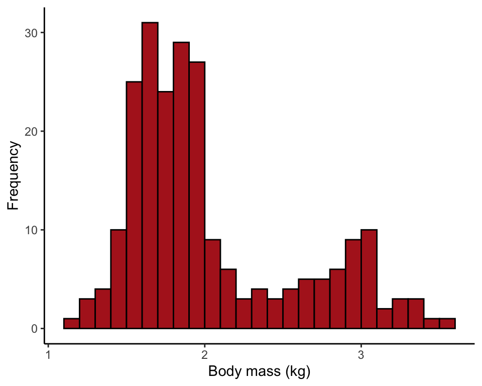
ggplot(data = salmonSizeData, aes(x = massKg)) +
geom_histogram(fill = "firebrick", col = "black", binwidth = 0.3,
boundary = 0, closed = "left") +
labs(x = "Body mass (kg)", y = "Frequency") +
theme_classic()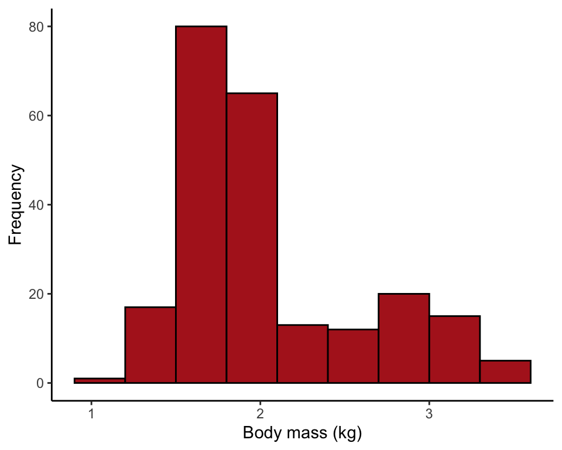
ggplot(data = salmonSizeData, aes(x = massKg)) +
geom_histogram(fill = "firebrick", col = "black", binwidth = 0.5,
boundary = 0, closed = "left") +
labs(x = "Body mass (kg)", y = "Frequency") +
theme_classic()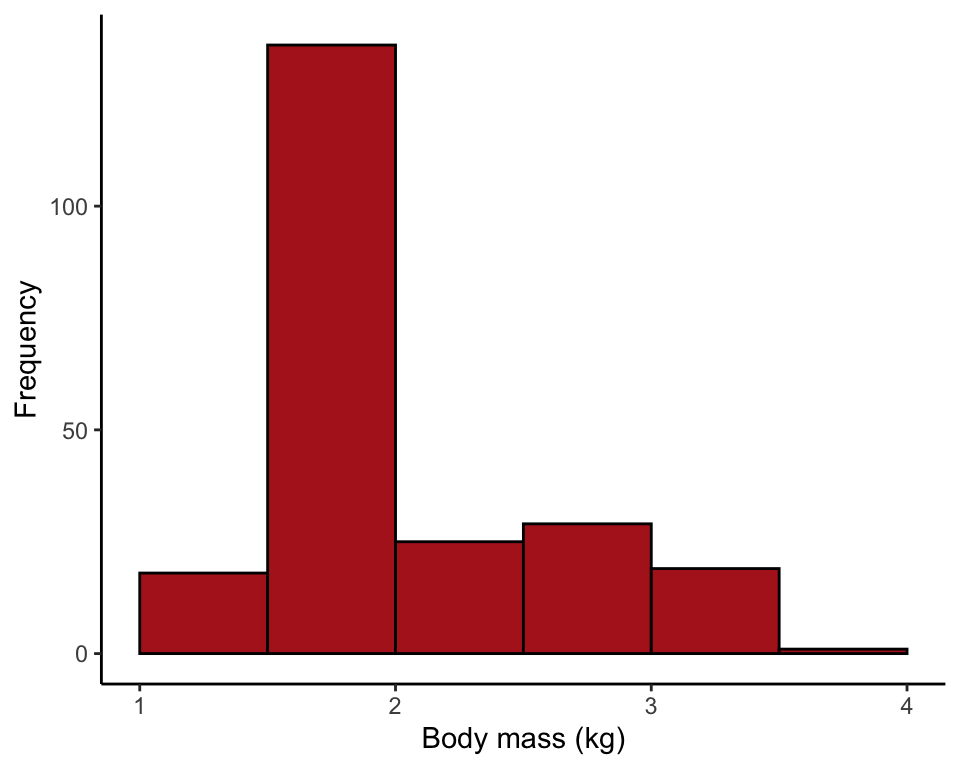
Example 2.3A. Bird malaria
Contingency table, grouped bar plot, and mosaic plot showing the association between egg removal treatment and incidence of malaria in female great tits.
Read and inspect data
birdMalariaData <- read.csv(url("https://whitlockschluter3e.zoology.ubc.ca/Data/chapter02/chap02e3aBirdMalaria.csv"), stringsAsFactors = FALSE)
head(birdMalariaData)## bird treatment response
## 1 1 Control Malaria
## 2 2 Control Malaria
## 3 3 Control Malaria
## 4 4 Control Malaria
## 5 5 Control Malaria
## 6 6 Control MalariaContingency table
Use table() with the names of two categorical variables as arguments, beginning with the response variable.
birdMalariaTable <- table(birdMalariaData$response, birdMalariaData$treatment)
birdMalariaTable##
## Control Egg removal
## Malaria 7 15
## No Malaria 28 15Add row and column sums
To add row and column totals to the table, use the following.
addmargins(birdMalariaTable, margin = c(1,2), FUN = sum, quiet = TRUE)##
## Control Egg removal sum
## Malaria 7 15 22
## No Malaria 28 15 43
## sum 35 30 65Grouped bar graph
In a grouped bar graph, ggplot() uses the argument fill for the response variable (here named response). The argument position controls the placement of bars. scale_fill_manual is optional but it allows control of the colors used.
ggplot(birdMalariaData, aes(x = treatment, fill = response)) +
geom_bar(stat = "count", position = position_dodge2(preserve="single")) +
scale_fill_manual(values=c("firebrick", "goldenrod1")) +
labs(x = "Treatment", y = "Frequency") +
theme_classic()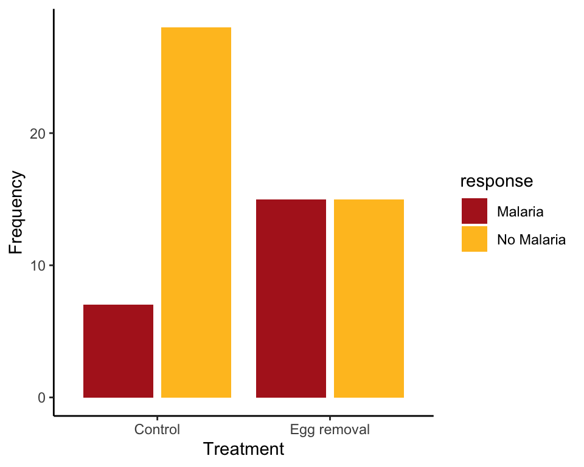
Mosaic plot
Mosaic plots are easiest in base R rather than ggplot(). The t() command flips (transposes) the table to ensure that the explanatory variable is along the horizontal axis.
mosaicplot( t(birdMalariaTable), col = c("firebrick", "goldenrod1"),
sub = "Treatment", ylab = "Relative frequency", main = "")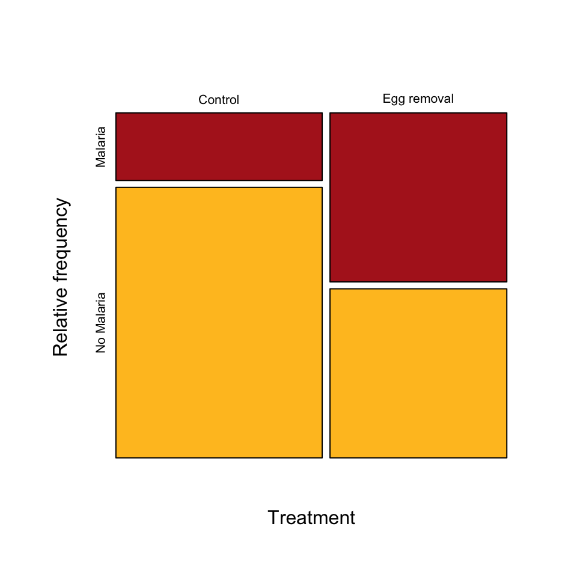
Figure 2.3-3. Guppy fathers and sons
Scatter plot of the relationship between the ornamentation of male guppies and the average attractiveness of their sons.
Read and inspect data
guppyFatherSonData <- read.csv("https://whitlockschluter3e.zoology.ubc.ca/Data/chapter02/chap02f3_3GuppyFatherSonAttractiveness.csv", stringsAsFactors = FALSE)
head(guppyFatherSonData)## fatherOrnamentation sonAttractiveness
## 1 0.35 -0.32
## 2 0.03 -0.03
## 3 0.14 0.11
## 4 0.10 0.28
## 5 0.22 0.31
## 6 0.23 0.18Scatter plot
A quick scatter plot can be made simply with base R’s plot() command. The tilde (~) relates the response variable sonAttractiveness to the explanatory variable fatherOrnamentation.
plot(sonAttractiveness ~ fatherOrnamentation, data = guppyFatherSonData,
pch = 16, col = "firebrick")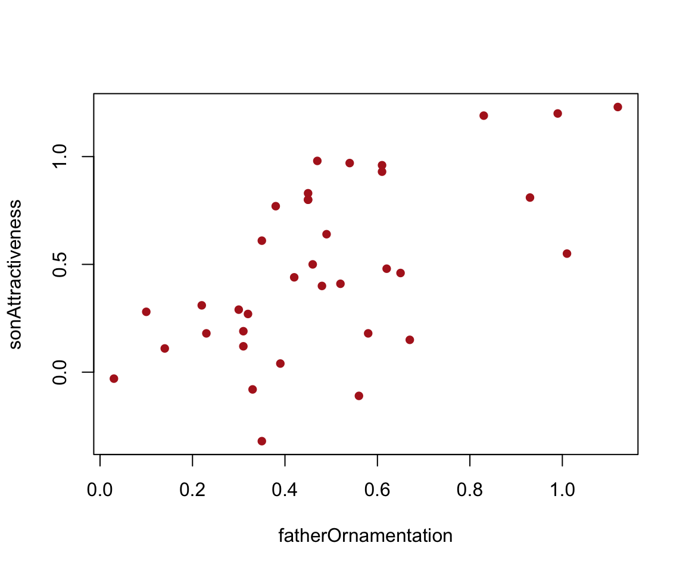
In ggplot(), the commands for a scatter plot are as follows.
ggplot(data = guppyFatherSonData, aes(x = fatherOrnamentation, y = sonAttractiveness)) +
geom_point(size = 3, col = "firebrick") +
labs(x = "Father's ornamentation", y = "Son's attractiveness") +
theme_classic()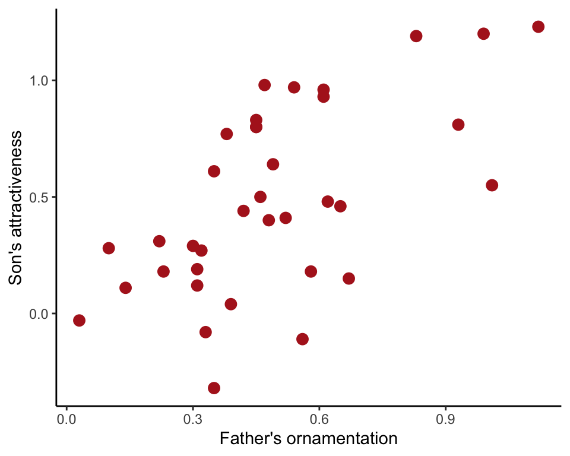
Example 2.3B.Human hemoglobin
Strip chart, violin plot, and multiple histograms showing hemoglobin concentration in men living at high altitude in three different parts of the world and in a sea level population (USA).
Read and inspect data
hemoglobinData <- read.csv(url("https://whitlockschluter3e.zoology.ubc.ca/Data/chapter02/chap02e3bHumanHemoglobinElevation.csv"), stringsAsFactors = FALSE)
head(hemoglobinData)## id hemoglobin population
## 1 US.Sea.level1 10.40 USA
## 2 US.Sea.level2 11.20 USA
## 3 US.Sea.level3 11.70 USA
## 4 US.Sea.level4 11.80 USA
## 5 US.Sea.level5 11.90 USA
## 6 US.Sea.level6 12.05 USATable of sample sizes
table(hemoglobinData$population)##
## Andes Ethiopia Tibet USA
## 71 128 59 1704Strip chart
ggplot(data = hemoglobinData, aes(x = population, y = hemoglobin)) +
geom_jitter(color = "firebrick", shape = 1, size = 3, width = 0.15) +
labs(x = "Male population", y = "Hemoglobin concentration (g/dL)") +
theme_classic()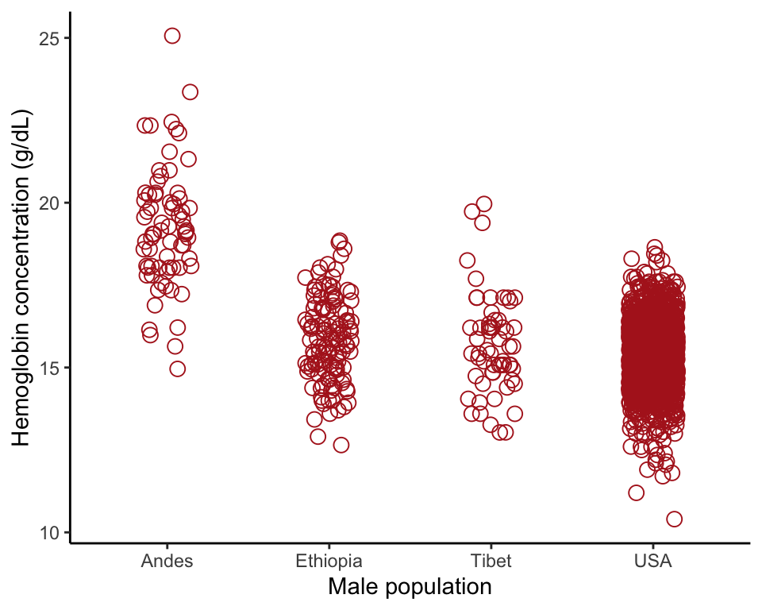
Violin plot
A violin plot using ggplot(), like that in Figure 2.3-4.
ggplot(data = hemoglobinData, aes(y = hemoglobin, x = population)) +
geom_violin(fill = "goldenrod1", col = "black") +
labs(x = "Male population", y = "Hemoglobin concentration (g/dL)") +
stat_summary(fun.y = mean, geom = "point", color = "black") +
theme_classic()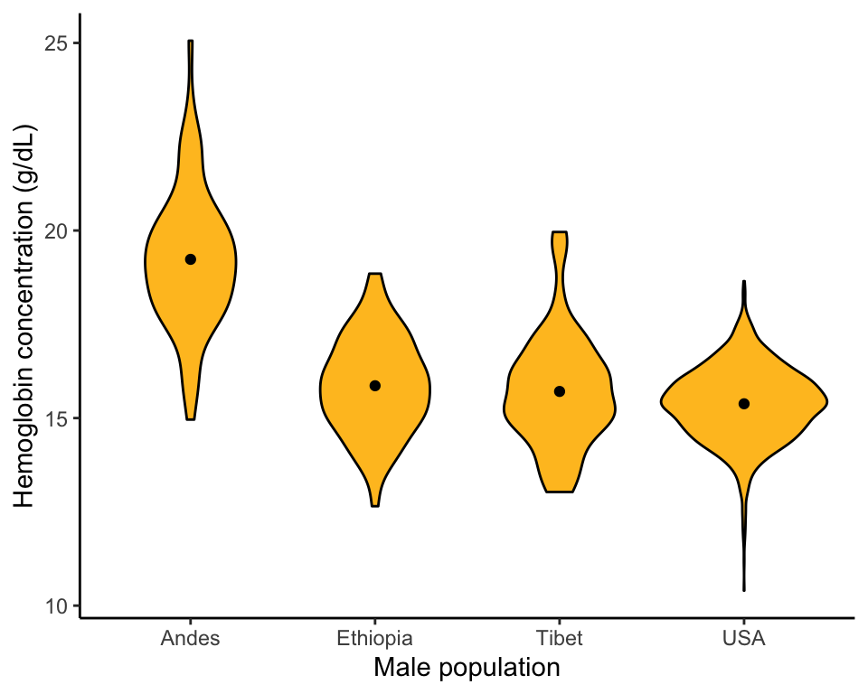
Multiple histograms
Shows the association between hemoglobin and population using stacked histograms all having the same x-axis (Figure 2.3-5). The facet_wrap() function indicates the groups (in this case populations), with the tilde “~” indicating that they represent another explanatory variable.
ggplot(data = hemoglobinData, aes(x = hemoglobin)) +
geom_histogram(fill = "firebrick", binwidth = 1, col = "black",
boundary = 0, closed = "left") +
labs(x = "Hemoglobin concentration (g/dL)", y = "Frequency") +
theme_classic() +
facet_wrap( ~ population, ncol = 1, scales = "free_y", strip.position = "right")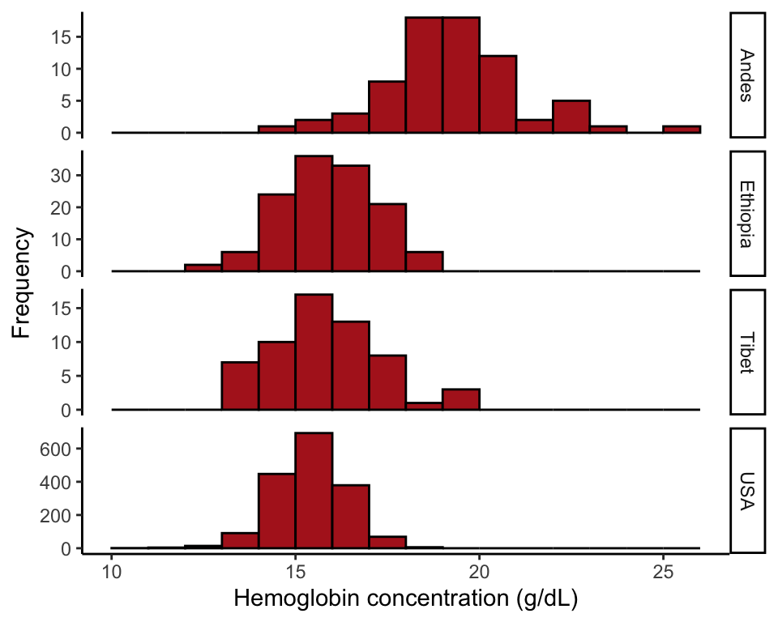
Example 2.4A. Measles outbreaks
Line graph showing confirmed cases of measles in England and Wales from 1995 to 2011. Annual counts are quarterly.
Read and inspect data
measlesData <- read.csv("https://whitlockschluter3e.zoology.ubc.ca/Data/chapter02/chap02f4_1MeaslesOutbreaks.csv", stringsAsFactors = FALSE)
head(measlesData)## year quarter confirmedCases yearByQuarter
## 1 2011 4th 136 2011.88
## 2 2011 3rd 154 2011.62
## 3 2011 2nd 346 2011.38
## 4 2011 1st 151 2011.12
## 5 2010 4th 31 2010.88
## 6 2010 3rd 134 2010.62Draw a line graph
The graph in this example consists of both points and lines, and so both geom_line() and geom_point() are included.
ggplot(data = measlesData, aes(x = yearByQuarter, y = confirmedCases)) +
geom_line() +
geom_point(color = "firebrick") +
labs(x = "Year", y = "Number of new measles cases") +
theme_classic()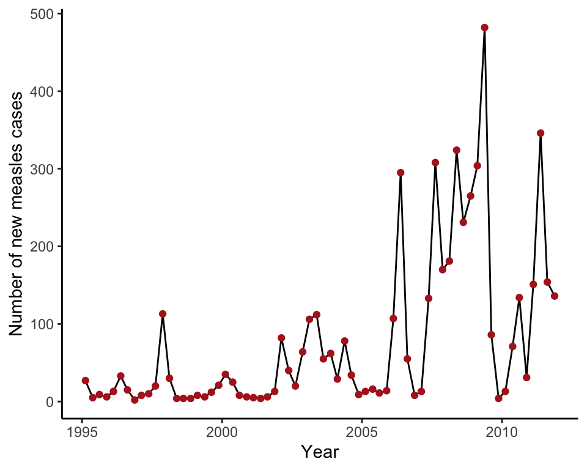